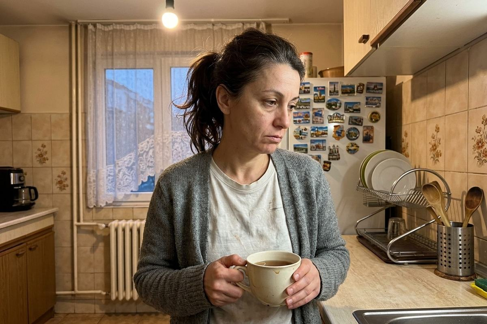
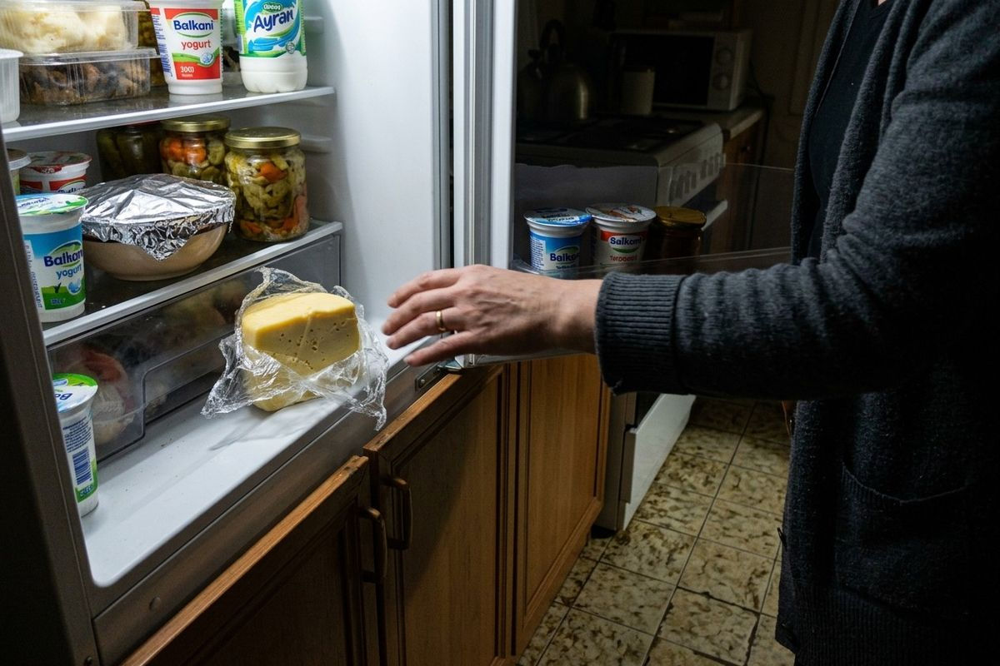
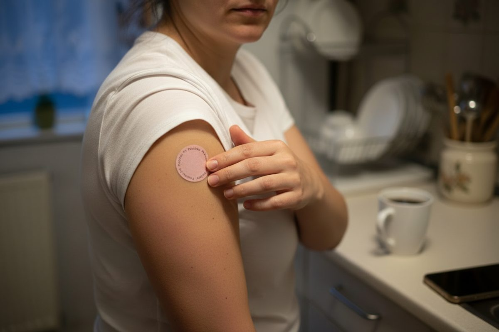

„Ям като врабче, а в девет вечерта стоя пред хладилника.“ Учени откриха защо се случва — и вината не е във волята
Изследване с 1 070 души показа, че вечерният глад често започва часове по-рано — с един „спад“, за който никой не ни е казвал. Ето какво се случва и защо все повече жени започват деня с една малка лепенка.
Разказът на Даниела е драматизация, събрана от истории, които клиентки споделят с нас. Научните факти са с източници в края на статията.

Казвам се Даниела. На 47 съм, от Пловдив, счетоводителка и майка на две деца.
Ако някой ми беше казал преди година, че ще разказвам публично за глада си, щях да се засмея. Защото гладът беше последното нещо, за което мислех. Аз почти не ядях.
Ето моят списък. Може би ще разпознаете нещо от него:
- Кето — 4 месеца. Свалих 3 килограма. Върнах 4.
- Гладуване 16:8 — цяла година. До обяд — героиня. Вечер — катастрофа.
- Приложение за калории. Броях всяка хапка. Дори олиото в тигана.
- „Нищо след 18:00.“ Издържах до първия рожден ден.
- 10 000 крачки на ден. Всеки ден. В дъжд и сняг.
Свалях по два килограма. И ги връщах с лихвата.
Но най-лошото не беше кантарът.
Най-лошото беше, че никой не ми вярваше.
„Просто яж по-малко.“ Каза ми го личната лекарка. Каза ми го свекърва ми. Веднъж, с усмивка, ми го каза и мъжът ми.
А аз ядях по-малко. По-малко от всички на масата.
Помня една неделя съвсем точно. Обяд у свекърва ми. На масата — сарми, баница, торта. В моята чиния — салата без олио и чаша вода. Гордеех се със себе си.
Същата вечер, в 21:15, стоях в тъмната кухня пред отворения хладилник и ядях кашкавал направо от пакета. Не бях гладна. Бях… като в транс. Сякаш някой друг управляваше ръцете ми.
Тогава светна лампата. Беше дъщеря ми, на 16.
„Мамо?… Добре ли си?“
Не знаех какво да ѝ отговоря. Затворих хладилника и се разплаках в банята. Не заради кашкавала. А защото си помислих: „Значи наистина съм слаба. Значи проблемът съм аз.“

Много жени след 40 минават през същата кухня, в същия час. И ако и Вие сте сред тях, ето какво никой не ми каза тогава:
Вината не е във волята Ви.
Изследването, което обърна всичко: виновникът не е скокът. А спадът.
През 2021 г. учени от King's College London, заедно с изследователи от Харвард и още няколко университета, публикуваха в научното списание Nature Metabolism изследване с 1 070 души. Със сензори наблюдавали кръвната им захар денонощно, след като всички изяли едни и същи закуски.
И открили нещо, което обяснява моята кухня в 21:15.
При част от хората 2–3 часа след хранене кръвната захар не просто се връща към нормалното. Тя пада под изходното си ниво. Учените ги нарекли „големите спадащи“ (big dippers).
Ето какво се случва с тях, при същата храна:
- гладът им е с около 9% по-силен;
- огладняват с около половин час по-рано;
- изяждат средно 75 калории повече в следващите 3–4 часа;
- и около 312 калории повече за целия ден.
312 калории — това е една поничка. Всеки ден. Не защото тези хора не се контролират, а защото тялото им изпраща силен сигнал „гладна съм“. И този сигнал е по-силен от всяка воля.
Въртележката, на която живеят толкова много жени
Ето как изглежда един обикновен ден на въртележката:
- Сутрин: кафе и нещо набързо. Захарта се вдига.
- Около 11:00: спадът. Ръката сама посяга към бисквитата.
- Обяд: опитвате се да ядете „правилно“. Нов скок, нов спад.
- 16:00: умора, нещо сладко, още едно кафе.
- 21:00: тялото, което цял ден е било на въртележка, си иска „компенсацията“. Хладилникът.
И ето защо „просто яж по-малко“ не работи. Може да намалите порциите, но ако въртележката си остане, гладът става по-силен, а не по-слаб. Воля срещу биология. А в 21:00 биологията винаги печели.
С годините много жени усещат това все по-остро. Храненето, което на 25 „минаваше“, след 40 изведнъж започва да завършва с вълчи глад вечер.
Значи въпросът никога не е бил „как да ям по-малко“. Въпросът е: как да сляза от въртележката?
Четирите условия, без които нищо не издържа повече от седмица
Когато разбрах това, си направих списък. Каквото и да опитам оттук нататък, трябваше да отговаря на четири условия:
- Да не изисква воля всеки ден. Защото моята свършваше точно в 21:00.
- Да не е поредната диета със забрани. Пробвала съм ги всичките.
- Да е толкова просто, че да не го забравям. Всеки ден, а не „от понеделник“.
- Да е насочено към въртележката, а не към това да се боря с глада си.
Растението, което учените изследват от десетилетия
Така стигнах до берберина.
Берберинът е растително вещество — жълт алкалоид, който се съдържа в растения като берберис (киселия трън). В традиционната медицина на Азия се използва от векове. А през последните 20 години е обект на десетки клинични изследвания, и то именно заради връзката си с метаболизма на глюкозата. Мета-анализи, които обобщават тези изследвания, отчитат по-ниски стойности на кръвната захар на гладно и след хранене при прием на берберин.
Звучеше прекрасно. Но има един проблем, за който рядко се говори.
Защо капсулите с берберин толкова често остават в чекмеджето
Пробвах ги. Ето какво разбрах. Ако и Вие сте ги пробвали, вероятно ще кимнете:
1. Пият се по 2–3 пъти на ден. В изследванията берберинът се приема по няколко пъти дневно, с храна. Аз не помня да пия вода, камо ли капсули по часовник.
2. Стомахът. Подуване, запек или обратното са сред най-честите оплаквания при капсулите с берберин.
3. Просто забравяме. Според Световната здравна организация около половината хора на дългосрочна терапия не я спазват така, както е предписана. Щом толкова хора пропускат дори лекарствата си, какво остава за добавките?
Най-добрата съставка на света не помага, ако си стои в чекмеджето.
Тогава видях малкия кръг на рамото на колежката ми
Мислех, че е лепенка за отказване от цигари. „Не — засмя се тя. — Берберин. Слагам я сутрин с кафето и забравям за нея.“
Така се запознах с FitPatches — лепенки с берберин.
Идеята е толкова проста, че се ядосах, че не съм се сетила сама:
- Една лепенка сутрин, на рамото или горната част на ръката.
- Носите я 8 часа — през деня, точно когато върви въртележката.
- Не се гълта, не горчи и не се помни по три пъти на ден.
- Берберин, канела и нар в една малка лепенка.

| Капсули с берберин | Лепенка FitPatches | |
|---|---|---|
| Колко пъти на ден | 2–3 пъти | 1 път, сутрин |
| Гълтане и вкус | Гълтат се, горчиви | Не се гълта |
| Колко време отнема | Вода, храна, часовник | 2 секунди с кафето |
| Лесно се забравя | Често | Става част от сутрешния ритуал |
| Плащане | Различно | При доставка |
Плащане при доставка · 30-дневна гаранция
Какво се случи (ще бъда честна)
Мразя рекламите с „минус 15 кг за месец“. Затова ще Ви разкажа точно как беше.
Ден 1. Нищо. Залепих я на рамото до кафето и забравих за нея.
Седмица 1. Не пропуснах нито една сутрин. За първи път от години спазвах нещо седем дни подред. Само това беше победа.
Седмица 2. Първата вечер, в която минах покрай хладилника и… не го отворих. Не с воля. Просто не ме „дърпаше“ като преди.
Седмица 4. Бисквитата в 11:00 вече не е задължителна. Обядът ми спря да бъде „последният шанс“.
Месец 2. Кантарът тръгна надолу. Бавно. Без гладуване. И за първи път не се върна обратно.
Но знаете ли кое беше най-хубавото? Една вечер дъщеря ми влезе в кухнята, видя ме на масата с чаша чай и каза:
„Мамо, изглеждаш спокойна.“
Спокойна. Не „по-слаба“. Спокойна. Не го бях чувала от години.
Разказът е драматизация. Резултатите са индивидуални и зависят от храненето, движението и организма. FitPatches не замества разнообразното хранене и движението.
Защо FitPatches, а не „поредното чудо от интернет“
След всички измами с фалшиви лекари и известни лица имате пълното право да сте скептични. Затова ето какво можете да проверите сами:
Какво казват клиентките
Как се използва

1Сутрин, върху чиста и суха кожа на рамото или горната част на ръката.

2Залепете и притиснете за няколко секунди.

3Носете я 8 часа, после я махнете. Утре сложете нова, на ново място.
Най-честите въпроси
Наистина ли ще ми помогне?
Няма да Ви обещаваме чудеса. Никой честен производител не би го направил. Берберинът е сред най-изследваните растителни вещества, а лепенката прави ежедневната употреба лесна. Затова има 30-дневна гаранция: пробвайте и преценете сами.
Има ли изследвания за самата лепенка?
Клиничните изследвания с берберин са правени основно с капсули, затова не Ви обещаваме конкретни цифри. Лепенката е нашият отговор на най-големия проблем на капсулите: че се забравят.
Кога ще усетя разлика?
При всяка жена е различно и зависи от храненето, движението и организма. Дайте си поне 30 дни постоянство. Точно толкова е и гаранцията.
Дразни ли кожата?
Сменяйте мястото всеки ден и лепете само върху здрава, чиста и суха кожа. Ако се появи зачервяване или сърбеж, махнете лепенката и спрете употребата.
Мога ли да я ползвам, ако пия лекарства?
При прием на лекарства (особено за кръвна захар или кръвно), при заболявания на черния дроб или други хронични заболявания първо се консултирайте с лекар. Не се препоръчва при бременност, кърмене и за деца.
Как се плаща?
С наложен платеж: плащате при получаване в офис на Еконт. Не Ви трябва карта и не плащате нищо предварително.
Ами ако не съм доволна?
Свържете се с нас в рамките на 30 дни и Ви връщаме парите. Условията са описани на страницата на продукта.
Изберете своя пакет
Изследване на University College London показва, че на един нов навик са му нужни средно около 66 дни, за да стане автоматичен. Затова повечето жени избират пакета за 4 месеца: така имате време да превърнете лепенката в навик, без да мислите за нова поръчка.
3 пакета + 1 подарък
📦 Доставка с Еконт · 💶 Плащане при доставка · ↩️ 30-дневна гаранция
Цената на доставката се вижда преди да потвърдите поръчката.
Сега имате два пътя
Аз избрах втория. И ми се иска някой да ми беше разказал за въртележката десет години по-рано.
Искам да опитам FitPatches →Плащане при доставка · 30-дневна гаранция
P.S. Ако още се колебаете: не плащате нищо предварително. Получавате пратката, плащате в офиса на Еконт, а ако до 30 дни не сте доволна, връщаме парите. Единственото, което рискувате, е още една вечер на въртележката.
- Wyatt P. et al. Postprandial glycaemic dips predict appetite and energy intake in healthy individuals. Nature Metabolism, 2021. nature.com/articles/s42255-021-00383-x · King's College London: „New research reveals why some of us are hungry all the time“
- Мета-анализ на клинични изследвания за ефекта на берберина върху глюкозата (2024): ncbi.nlm.nih.gov/pmc/articles/PMC11617981. Изследванията са с берберин, приеман през устата.
- World Health Organization. Adherence to long-term therapies: evidence for action. 2003.
- Lally P. et al. How are habits formed: Modelling habit formation in the real world. European Journal of Social Psychology, 2010. doi:10.1002/ejsp.674